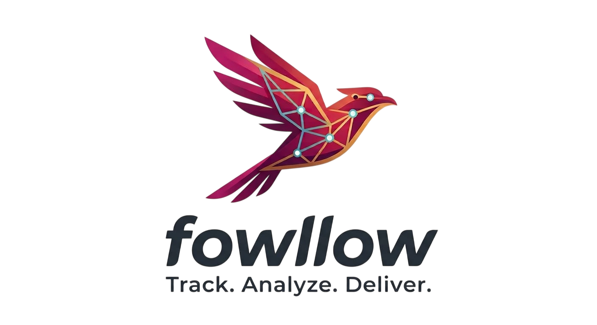

<aside class="gm-sidebar" aria-label="Menú principal">
  <a class="gm-sidebar__brand" href="dashboard.html" aria-label="Ir al dashboard">
    
  </a>
  <nav class="gm-nav" aria-label="Navegación principal">
    <a class="gm-nav__item" data-page="dashboard" href="dashboard.html"><span aria-hidden="true">⌂</span><span>Dashboard</span></a>
    <a class="gm-nav__item" data-page="vehiculos" href="vehiculos.html"><span aria-hidden="true">▣</span><span>Vehículos</span></a>
    <a class="gm-nav__item" data-page="rutas" href="rutas.html"><span aria-hidden="true">⇢</span><span>Rutas</span></a>
    <a class="gm-nav__item" data-page="clientes" href="clientes.html"><span aria-hidden="true">⌖</span><span>Clientes</span></a>
    <a class="gm-nav__item" data-page="follow-back" href="contact.html"><span aria-hidden="true">●</span><span>Follow Back</span></a>
  </nav>
</aside>
